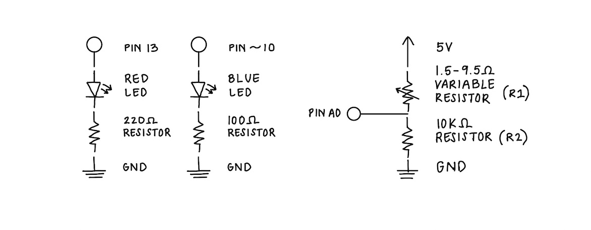
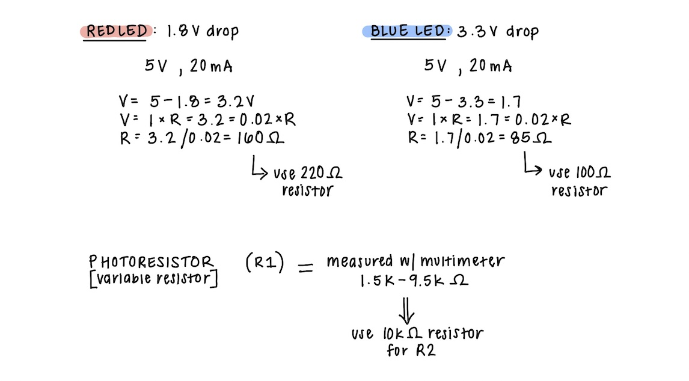
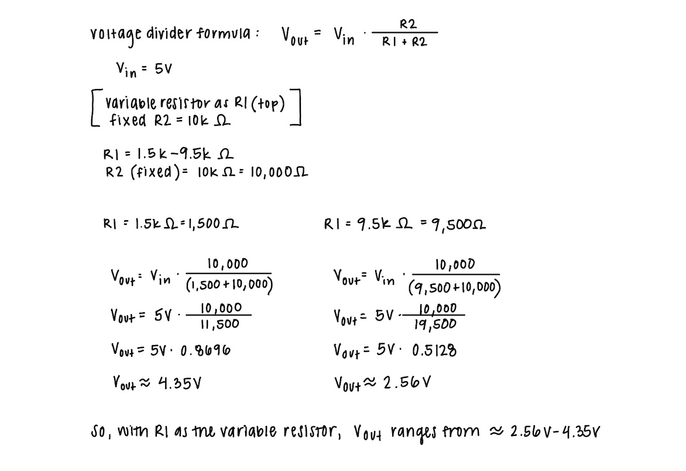
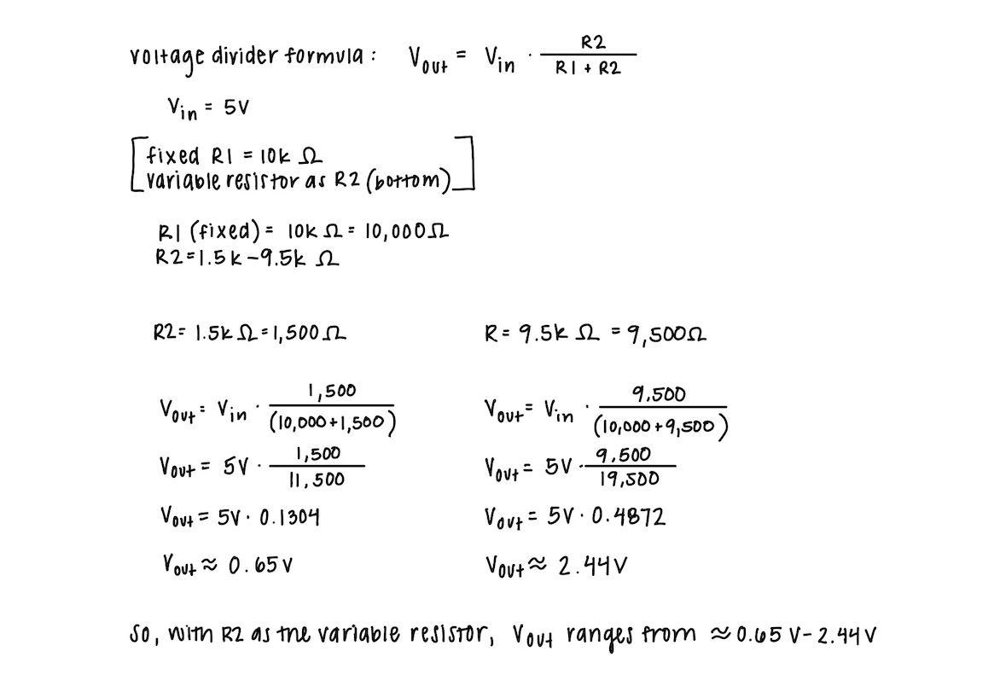

My Schematic
 Image of my schematic with labeled components, including pins, resistors, LEDs, potentiometer, and ground.Resistance Calculation
 Image of my calculations for the resistances needed for my circuit. I used a 220 ohm resistor for the red LED, a 100 ohm resistor for the blue LED, and a 10k ohm resistor for the potentiometer.My Circuit
 Image of my physical circuit, "Input Output", with all components connected.
Image of my physical circuit, "Input Output", with all components connected.
My Firmware
/*
Analog Input
Demonstrates analog input by reading an analog sensor on analog pin 0 and
turning on and off a light emitting diode(LED) connected to digital pin 13.
The amount of time the LED will be on and off depends on the value obtained
by analogRead().
The circuit:
- potentiometer
center pin of the potentiometer to the analog input 0
one side pin (either one) to ground
the other side pin to +5V
- LED
anode (long leg) attached to digital output 13 through 220 ohm resistor
cathode (short leg) attached to ground
- Note: because most Arduinos have a built-in LED attached to pin 13 on the
board, the LED is optional.
created by David Cuartielles
modified 30 Aug 2011
By Tom Igoe
This example code is in the public domain.
https://docs.arduino.cc/built-in-examples/analog/AnalogInput/
*/
/*
Calibration
Demonstrates one technique for calibrating sensor input. The sensor readings
during the first five seconds of the sketch execution define the minimum and
maximum of expected values attached to the sensor pin.
The sensor minimum and maximum initial values may seem backwards. Initially,
you set the minimum high and listen for anything lower, saving it as the new
minimum. Likewise, you set the maximum low and listen for anything higher as
the new maximum.
The circuit:
- analog sensor (potentiometer will do) attached to analog input 0
- LED attached from digital pin 9 to ground through 220 ohm resistor
created 29 Oct 2008
by David A Mellis
modified 30 Aug 2011
by Tom Igoe
modified 07 Apr 2017
by Zachary J. Fields
This example code is in the public domain.
https://docs.arduino.cc/built-in-examples/analog/Calibration/
*/
const int sensorPin = A0; // analog input pin for the potentiometer
const int ledBlue = 10; // pin for simple blue LED
int ledRed = 13; // pin for simple red LED
int sensorValue = 0; // variable to store the value (0-1023) read from the sensor
int mappedValue = 0; // variable to store the sensor value mapped to a different range of 0-255
int sensorMin = 1023; // minimum sensor value
int sensorMax = 0; // maximum sensor value
void setup() {
// declare the red and blue LEDs as OUTPUTs:
pinMode(ledRed, OUTPUT);
pinMode(ledBlue, OUTPUT);
// start serial monitor communication
Serial.begin(9600);
// START CALIBRATION:
// turn on red LED to signal the start of the calibration period:
digitalWrite(ledRed, HIGH);
// calibrate during the first five seconds
while (millis() < 5000) { // returns the number of milliseconds since the start of the program
sensorValue = analogRead(sensorPin); // read the analog input from the sensor
// record the maximum sensor value
if (sensorValue > sensorMax) {
sensorMax = sensorValue;
}
// record the minimum sensor value
if (sensorValue < sensorMin) {
sensorMin = sensorValue;
}
}
// turn off red LED to signal the end of the calibration period
digitalWrite(ledRed, LOW);
// print message to show calibration is complete
Serial.println("Calibration Done");
// print the recorded minimum value to the serial monitor
Serial.print("sensorMin: ");
Serial.println(sensorMin);
// print the recorded maximum value to the serial monitor
Serial.print("sensorMax: ");
Serial.println(sensorMax);
}
void loop() {
// read the sensor value:
sensorValue = analogRead(sensorPin);
// make sure the sensor value stays within the constrained range
sensorValue = constrain(sensorValue, sensorMin, sensorMax);
// print the sensor value to the serial monitor
Serial.print("Sensor Value: ");
Serial.print(sensorValue);
// map the sensor reading from its calibrated range (sensorMin-sensorMax) to set output range (0-255)
mappedValue = map(sensorValue, sensorMin, sensorMax, 0, 255);
// print the mapped value to the serial monitor
Serial.print("\t Mapped Value: ");
Serial.println(mappedValue);
// check if the sensor value is BELOW the midpoint of its calibrated range
if (sensorValue < (sensorMin + sensorMax) / 2){
analogWrite(ledBlue, 0); // turn blue LED off
digitalWrite(ledRed, HIGH); // turn the red LED on
delay(mappedValue); // stop the program for milliseconds
digitalWrite(ledRed, LOW); // turn the red LED off
delay(mappedValue); // stop the program for milliseconds
// if the sensor value is ABOVE the midpoint:
} else {
digitalWrite(ledRed, LOW); // red LED is off
analogWrite(ledBlue, mappedValue); // turn blue LED on to the mapped sensor value (0-255)
}
}
My Circuit's Operation
Video of my circuit in operation, with a potentiometer, red LED, and blue LED.My Circuit's Serial Monitor
Video of an example output from the serial monitor.Additional Questions
1: In your voltage divider, can the variable resistor be either R1 or R2 or does it need to be one or the other?
Justify your answer with example calculations.
In my voltage divider, the variable resistor can be either R1 (the top resistor) or R2 (the bottom resistor).
However, its position will determine how the output voltage (Vout) changes as the amount of light is adjusted.
When the light sensor is used as R1 (top), the Vout changes from about 4.35V to 2.56V.
Increasing the amount of light causes Vout to increase because the top resistor is dropping less voltage
and more voltage is available to move across the fixed bottom resistor.
When the light sensor is used as R2 (bottom), the Vout changes from about 0.65V to 2.44V.
Increasing the amount of light reduces the sensor’s resistance,
meaning less voltage moves across it, so Vout decreases.
Therefore, either configuration works, but the voltage range and the direction it changes is different.
It just depends on whether you want the output voltage to increase or decrease with brightness.
In other words, whether the LED should turn on or off in response to light.


Image of my voltage divider example calculations.
2: Draw a graph where the x-axis is time and the y-axis is voltage.
Plot the voltage at V-measure of your voltage divider of your shared gif.
Answer
3: AnalogWrite and analogRead are respectively 8-bit and 10-bit values.
Imagine you had 10-bit PWM and a 16-bit analog-to-digital converter instead.
How would this change your map() code? Explain your answer.
Answer
4: Did you use AI tools in completing this assignment?
If yes, please provide details on how/when, as well as a brief reflection.
If no, you can either leave this question blank, or provide other information if you'd like.
Answer